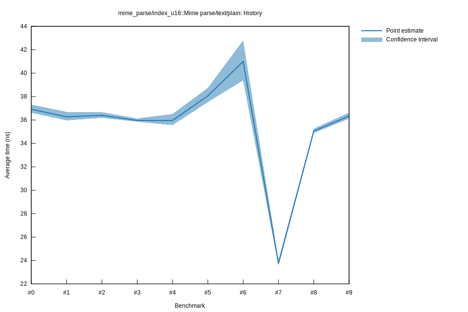

# 42025-10-14T15:54:57-07:00
|
Lower Bound |
Estimate |
Upper Bound |
| Value: |
35.56ns |
35.96ns |
36.51ns |
| Throughput: |
268.18MiB/s |
265.20MiB/s |
261.19MiB/s |
| Change in Value: |
-4.2512% |
-0.8953% |
+2.7451% |
| Change in Throughput: |
+4.4400% |
+0.9034% |
-2.6717% |
Change within noise threshold.
# 32025-10-14T15:35:09-07:00
|
Lower Bound |
Estimate |
Upper Bound |
| Value: |
35.85ns |
35.96ns |
36.13ns |
| Throughput: |
266.00MiB/s |
265.18MiB/s |
263.96MiB/s |
| Change in Value: |
-1.1009% |
+1.7608% |
+5.0414% |
| Change in Throughput: |
+1.1132% |
-1.7303% |
-4.7994% |
Change within noise threshold.
# 22025-10-05T14:42:45-07:00
|
Lower Bound |
Estimate |
Upper Bound |
| Value: |
36.18ns |
36.40ns |
36.67ns |
| Throughput: |
263.56MiB/s |
262.03MiB/s |
260.09MiB/s |
| Change in Value: |
-2.1560% |
+1.3014% |
+4.1464% |
| Change in Throughput: |
+2.2036% |
-1.2847% |
-3.9813% |
Change within noise threshold.
# 12025-10-05T13:01:24-07:00
|
Lower Bound |
Estimate |
Upper Bound |
| Value: |
35.97ns |
36.27ns |
36.69ns |
| Throughput: |
265.16MiB/s |
262.93MiB/s |
259.91MiB/s |
| Change in Value: |
-7.8113% |
-3.9377% |
+0.6678% |
| Change in Throughput: |
+8.4732% |
+4.0991% |
-0.6633% |
No change in performance detected.
# 02025-10-05T12:59:51-07:00
|
Lower Bound |
Estimate |
Upper Bound |
| Value: |
36.62ns |
36.92ns |
37.31ns |
| Throughput: |
260.43MiB/s |
258.33MiB/s |
255.59MiB/s |